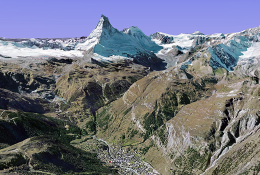

Zwitserse Alpen in high res
vrijdag 2 maart 2007
Sinds gisteren kan Zwitserland in hoge resolutie bekeken worden met Google Earth. Het is erg fascinerend om de tochtjes die je ooit maakte in de Zwitserse Alpen nog eens over te doen op je computer. De beelden zijn erg realistisch en bieden een zeer interessante kijk op de massieven. Zo kan je, in tegenstelling tot de werkelijkheid, een aantal kilometer de lucht inspringen vanop je kampeerplek om een blik te werpen achter de bergen die je op dat moment omringen.
Een medewerker van Google Earth deed een real life vlucht met een sportvliegtuig over in Google Earth: de gelijkenis met de werkelijkheid is verbluffend!
Tip voor Earth gebruikers: vink bij de extra’s in de linkerkolom beslist de optie ‘Geographical features’ aan: deze voorziet de satellietbeelden van de namen van de bekendste toppen en vierduizenders.

L’incontournable Matterhorn vanuit Zermatt